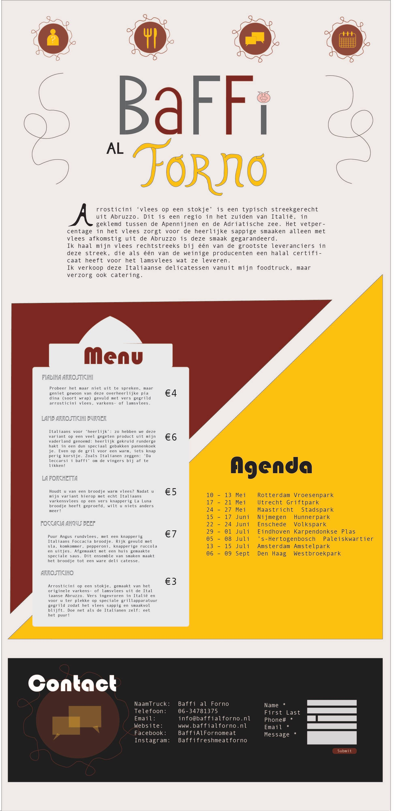

Geproduceerd werk
Op deze pagina zijn de dingen die ik gemaakt heb te zien.

-
Maas Koffie
-
Hierboven is een zelfgemaakte en zelf ontworpen poster van een voorstel voor een nieuw ontwerp van de koffieautomaten van Maas Koffie. Het ontwerpen van deze poster was een opdracht voor het vak Ucer Centered Design bij mijn opleiding communication and multimedia design.
Ook zoiets nodig? Klik hier en neem contact met mij op!
- 
-
Baffi al Forno
-
Hierboven is een zelfgemaakte en zelf ontworpen single page website te zien voor een foodtruck. Deze foodtruck heet Baffi al Forno en verkoopt vlees. Het ontwerpen van deze one page website was een opdracht voor het vak vormgeving bij mijn opleiding communication and multimedia design.
Ook zoiets nodig? Klik hier en neem contact met mij op!